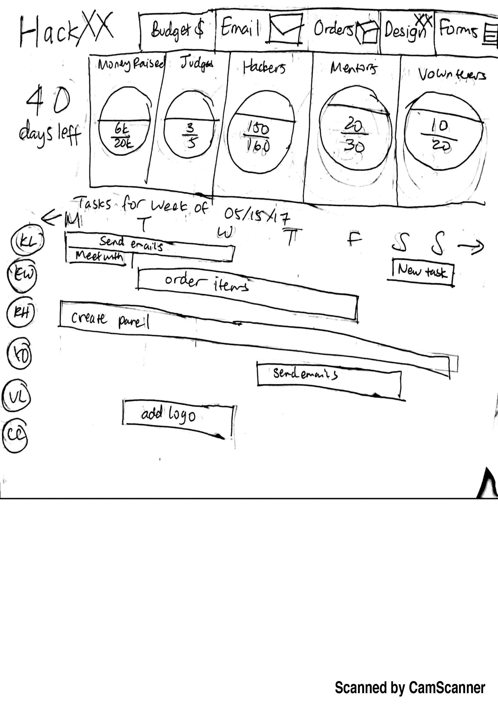
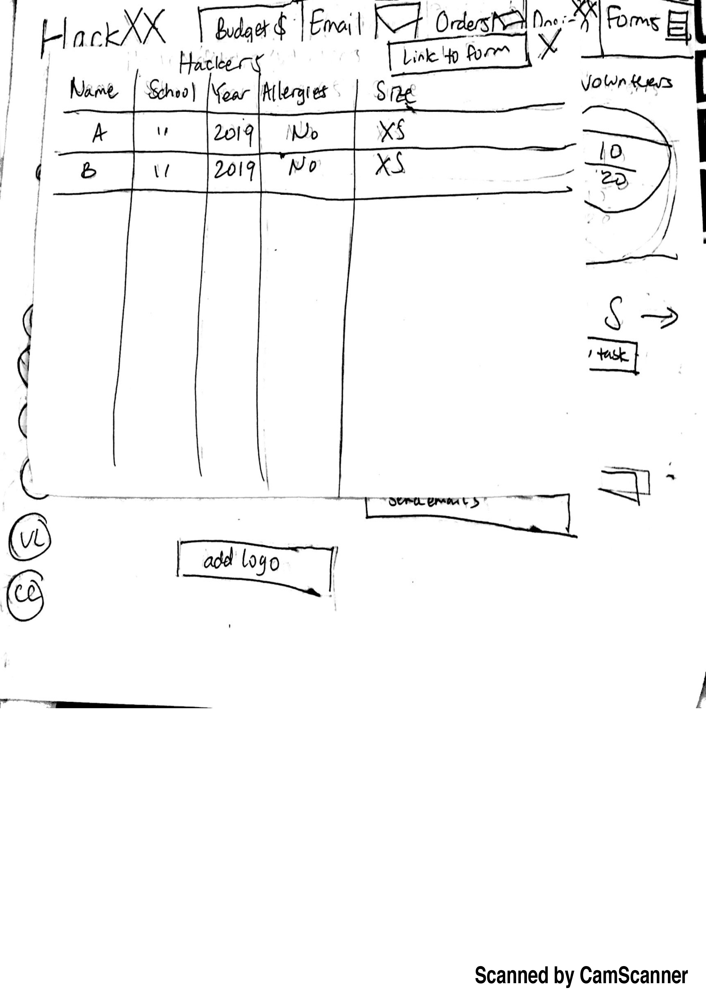

Task: Designing a dashboard for people who are planning a hackathon.
Design: On the dashboard, there is a countdown to remind people of how many days are left until the event. There are four progress circles containing the money raised, judges, hackers, mentors, and volunteers and they are ordered by priority of which has a smaller fraction of the goal completed. On top of the page are various forms and clicking on any of them results in a popup of the form. At the bottom of the page there is a Google calendar style timeline for the week with the tasks that each person must complete for the week.
Inspiration: I’m currently planning a women’s hackathon and I wish there was a way for everyone to see each other’s progress and for all of the forms and spreadsheets to be centralized in a way for everyone to be able to access. We currently use Google drive and Trello to do this but they are separate websites.


